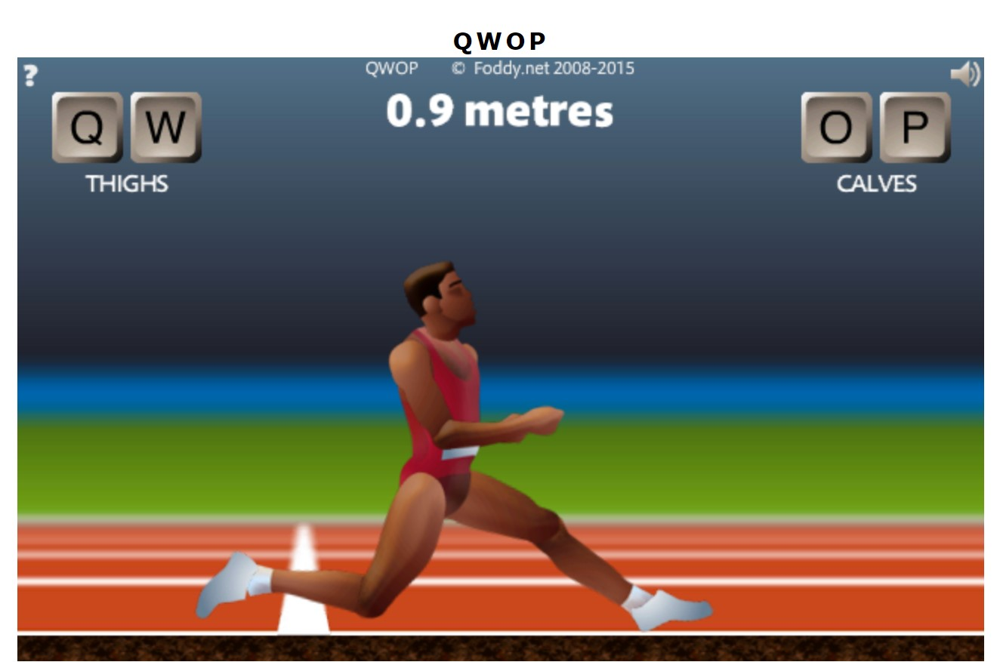
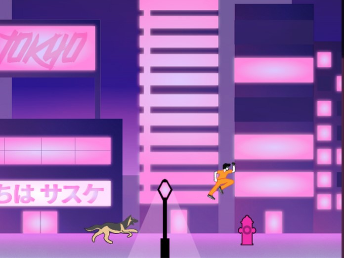
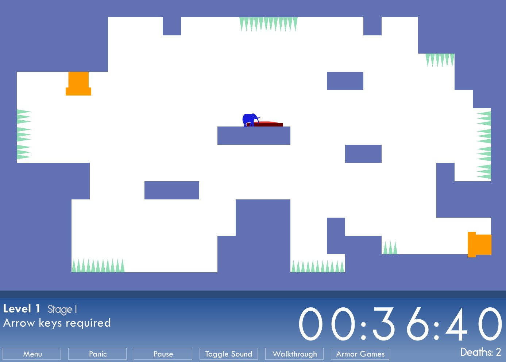

humanhybrids blog
Blog 4: Video Game Heart
QWOP
Qwop is a classic flash game. The user uses the keys Q,W,O, and P to move the runner pictured. This game is ridiculously hard to play because the controls do not completely control the character, but that is what makes the game also ridiculously fun! It uses a measurement mechanic to measure how far the user can go so they can play again to attempt to beat their previous distance.I have seen many people attempt this game but I have never actually seen anyone “win.” Winning is not the point of this game; this game is silly because of its ragdoll like movement the character has. This game is infinite just like Tokyo Escape which means it can be played for as long as anyone likes. Make sure to watch someone play this game! It is hilarious to watch the players legs not respond properly to the users attempts to make it run.
Tokyo Escape
Tokyo Escape is a 2d infinite runner game created in James Morgan’s Game Design class at SJSU. A prisoner escapes from prison and is being chased by the police in Tokyo. The prisoner runs continuously to the right of the screen and must avoid objects by either pressing W to jump or S to slide. The object of the game is to avoid being caught. This game has a high replayablity like QWOP because it is difficult to master but is fun to try. This game is measured by score instead of distance which grows by the amount of time you play the game. Tokyo Escape also has better player control of the character because it is responsive and does exactly what you tell it to do, unlike QWOP. Playing this game is better than watching someone else play it because you can try to beat your partner by getting a better score. When watching my partner Kira play, I was able to see all the items that the prisoner has to dodge such as hydrants, dogs, and flying bullets. This helped me be prepared for when it was my turn. I also was trying to beat her score by staying in the game longer without being captured.
This Is The Only Level
This game is also highly replayable just like Tokyo Escape and QWOP. It does not have abide by the same mechanic rules as those games because it chooses not to keep its own mechanics the same for every level. Your goal in this game is to try to make it through the pipe on the bottom right of the screen. The mechanics change so sometimes the right arrow key moves the elephant to the right and sometimes it moves it to the left. There is even a level where the player must use a mouse to move the elephant. This is a game that everyone should play once, or maybe twice.